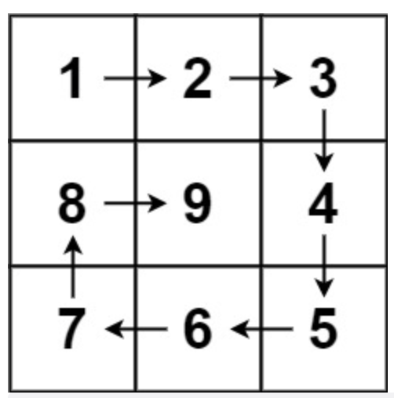

59. 螺旋矩阵 II
题目
给你一个正整数 n ，生成一个包含 1 到 n2 所有元素，且元素按顺时针顺序螺旋排列的 n x n 正方形矩阵 matrix 。
示例
示例 1:

输入：n = 3
输出：[[1,2,3],[8,9,4],[7,6,5]]
示例 2:
输入：n = 1
输出：[[1]]
提示：
- 1 <=
n<= 20
解题思路
思路
这个题直观上来看, 我们顺时针一圈(即从左到右、从上到下、从右到左、从下到上)即产生了一个顺时的矩阵外圈，然后该矩阵外圈的下一内圈也是按照同样的顺序即可产生。我们重点要注意的是: 比如从左到右完成，需要将上加一，这样从上到下的时候，不会重复产生那个顶点元素，其他方向规律是一样的。
实现
func generateMatrix(n int) [][]int {
var (
spiral_matrix = make([][]int, n) //螺旋矩阵
spiral_matrix_elements_sum = n * n // 螺旋矩阵元素总数
left = 0 // 左边起始位置
right = n - 1 // 右边起始位置
top = 0 // 上边起始位置
bottom = n - 1 //下边起始位置
current_num = 1 // 螺旋矩阵当前记录的元素(初始从1开始)
)
for i := 0; i < n; i++ {
spiral_matrix[i] = make([]int, n)
}
for current_num <= spiral_matrix_elements_sum {
// 从左到右
for i := left; i <= right; i++ {
spiral_matrix[top][i] = current_num
current_num++
}
top++
// 从上到下
for i := top; i <= bottom; i++ {
spiral_matrix[i][right] = current_num
current_num++
}
right--
// 从右到左
for i := right; i >= left; i-- {
spiral_matrix[bottom][i] = current_num
current_num++
}
bottom--
// 从下到上
for i := bottom; i >= top; i-- {
spiral_matrix[i][left] = current_num
current_num++
}
left++
}
return spiral_matrix
}